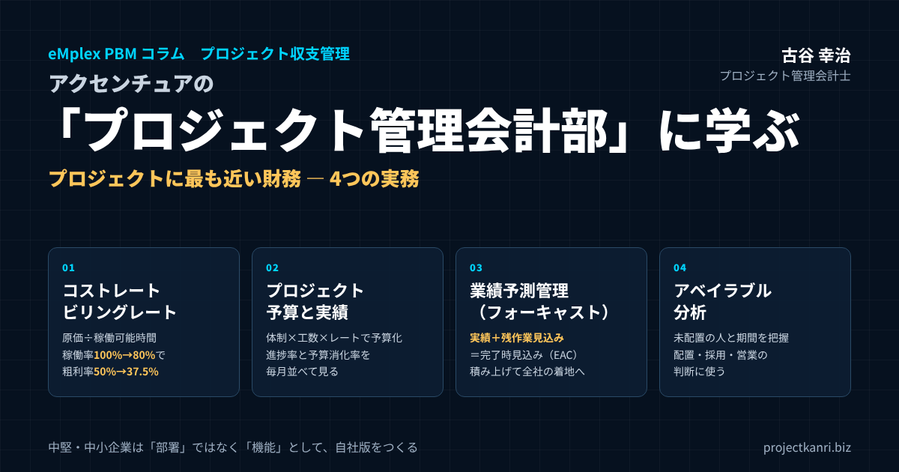

アクセンチュアの「プロジェクト管理会計部」に学ぶ―コストレート・ビリングレート、予算と実績、業績予測、アベイラブル分析の実務

はじめに：コンサルティングファームにある「プロジェクトに最も近い財務」
この記事の要点
- どんな部署か：顧客ごとのプロジェクトの収益管理・予実管理を担い、プロジェクトに最も近い立場から財務の視点で支援
- レート：コストレート（1時間あたり原価）とビリングレート（請求単価）。稼働率が粗利を大きく左右
- 予算と実績：体制×工数×レートで予算化し、進捗率と予算消化率を並べて監視
- 業績予測：実績＋残作業見込み＝完了時見込み（EAC）。積み上げて全社の着地へ
- アベイラブル分析：未配置の人と期間を把握し、配置・採用・営業の判断に使う
- 中小企業では：部署ではなく「機能」として、4段階で自社版をつくる
プロジェクト管理会計士の古谷です。今回は、少し視点を変えて、世界的なコンサルティングファームであるアクセンチュアの「プロジェクト管理会計」の部署を手がかりに、プロジェクト型ビジネスの管理会計を考えてみたいと思います。
アクセンチュアのような大手のコンサルティングファームでは、会社全体の決算を担う経理や財務とは別に、一つひとつのプロジェクトの収支を見る専門の部署を置いています。顧客ごとのプロジェクトについて、予算をつくり、見積を支え、売上と利益の予算と実績を管理し、リスクを分析し、プロジェクトマネージャーに数字を報告する。プロジェクトの最前線に近い位置で、財務と管理会計の視点から現場を支える部署です。
私は、エンプレックス（現SCSK）でCFOを務めていた頃、まさにこうした機能を社内につくることに力を注いできました。システム開発の会社では、会社の利益は、一つひとつのプロジェクトの利益の合計でしかありません。プロジェクトの収支が見えなければ、会社の収支も見えない。その実感から、案件ごとの予算と実績を、経理ではなく経営の言葉で語れる仕組みをつくってきました。
独立してから200社を超える企業を支援してきた中で、私がよく受ける質問があります。「大手のコンサルティングファームは、プロジェクトの採算を、どうやって管理しているのですか」。本稿は、その問いに対する一つの答えです。公開されている情報からアクセンチュアのプロジェクト管理会計の業務を整理し、その背後にある考え方を、プロジェクト管理会計の実務として解説します。そして、数千人の専門部署を持たない中堅・中小のプロジェクト型企業が、その考え方をどう取り入れればよいのかまでをお伝えします。
なお、本稿でご紹介するアクセンチュアの業務は、採用情報などとして公開されている範囲の内容です。社内の具体的な手順やシステムについて述べるものではありません。その業務の型を、プロジェクト管理会計の一般的な実務として読み解いていきます。
アクセンチュアの「プロジェクト管理会計」は何をする部署か
アクセンチュアのコーポレート部門には、「プロジェクト管理会計」という職種があります。人材紹介会社が案内している採用説明会の情報によれば、この部署は、顧客ごとのプロジェクトにおける収益管理と予実管理を中心とした管理会計を担当し、プロジェクトに最も近い立場から、財務の視点でビジネスを支援する役割と説明されています。
具体的な業務としては、担当するプロジェクトへの財務面での助言、プロジェクト単位の予算作成、予実管理、分析、リスク管理、そしてコンプライアンスに沿った監査対応が挙げられています。顧客とのビジネスの戦略づくりを支援する需要が高まっており、先進的な管理会計を経験できるポジションとも紹介されています。
| 業務 | 内容 |
|---|---|
| 収益管理・予実管理 | 顧客ごとのプロジェクト単位で予算を作成し、予算と実績を管理・分析 |
| 財務面での助言 | 担当プロジェクトの責任者に、財務の観点から意思決定や利益改善を助言 |
| リスク管理 | プロジェクト単位のリスクの把握と管理 |
| コンプライアンス・監査対応 | 社内規定や監査に沿った数字のチェックと対応 |
この業務の並びを見て、私は、プロジェクト管理会計の要素がほぼすべて含まれていると感じました。予算をつくり、実績を集め、差を分析し、先を見通し、リスクを早く見つけ、現場の責任者に伝える。これは、私がこれまでのコラムで「予算・実績・フォーキャスト」のサイクルとしてお伝えしてきたことと、まったく同じ構造です。
違うのは、規模と専任の度合いです。大手のコンサルティングファームでは、膨大な数のプロジェクトが同時に動いています。その一つひとつに財務の目を行き届かせるために、プロジェクト管理会計を専門の職種として独立させ、プロジェクトの近くに配置している。会計を、決算のための仕事ではなく、プロジェクトを成功させるための仕事として位置づけているのです。
もう一つ注目したいのは、この部署が「バックオフィス」として位置づけられていないことです。帳簿をつけ、数字を集計するだけの仕事ではありません。プロジェクトの責任者に助言し、利益の改善に向けて一緒に考える。財務の専門家が、プロジェクトの意思決定に参加しているのです。この点に、プロジェクト型ビジネスの管理会計の本質があると私は考えています。
なぜプロジェクト型企業には「プロジェクト管理会計部」が必要なのか
では、なぜプロジェクト型の企業には、こうした部署が必要なのでしょうか。理由は、プロジェクト型ビジネスの利益の構造にあります。
製品を作って売るビジネスであれば、製品ごとの原価は、ある程度安定しています。同じ製品を作れば、同じくらいの原価がかかる。しかし、プロジェクト型ビジネスでは、一つとして同じプロジェクトはありません。顧客も、範囲も、体制も、期間も、すべてが異なります。原価の大部分は人の時間であり、その時間は、プロジェクトの進め方や途中の変更によって、大きく増えたり減ったりします。
つまり、プロジェクト型ビジネスの利益は、受注した瞬間に決まるのではなく、プロジェクトが進む中で、日々変化していくのです。会社全体の決算で利益が分かるのは、すべてが終わった後です。それでは、手を打つには遅すぎます。プロジェクトが進んでいる最中に、そのプロジェクトの収支を見て、必要な手を打つ。そのためには、プロジェクトの近くに、財務の目を置く必要があります。
私がCFOを務めていた頃、経理の部署は月次の決算を締めることで手一杯でした。決算の数字は正確でも、それがどのプロジェクトのどんな事情から生まれたのかは、経理の部署からは見えません。一方、プロジェクトマネージャーは、自分のプロジェクトの状況はよく分かっていても、それを原価や利益の数字に置き換えて考える習慣がありませんでした。この二つの間をつなぐ役割が、どうしても必要だったのです。
プロジェクト管理会計部は、まさにこの「経理」と「現場」の間をつなぐ部署です。経理の正確さと、現場の状況への理解の両方を持ち、プロジェクトの数字を、プロジェクトマネージャーが意思決定に使える形にして届ける。この役割があるかどうかで、プロジェクトの採算の管理の質は、大きく変わります。
規模が大きくなるほど、この役割の重要性は増します。社員が数十人のうちは、経営者がすべてのプロジェクトの状況を頭に入れておくこともできます。しかし、社員が百人、二百人と増え、同時に動くプロジェクトが数十件になると、経営者の目はとても行き届きません。その段階で、プロジェクトの数字を集め、読み解き、伝える機能を持っているかどうかが、成長を続けられる会社と、成長の途中で採算が崩れる会社の分かれ目になります。
業務①：コストレートとビリングレートを設計する
プロジェクト管理会計部の仕事の土台になるのが、レートの設計です。プロジェクト型ビジネスでは、人の時間が原価の大部分を占めます。その時間を、原価としても、売上としても、金額に換算するための物差しがレートです。レートには、コストレートとビリングレートの二種類があります。
コストレートは、社員の一時間あたりの原価です。給与や賞与、会社が負担する社会保険料などの法定福利費に、オフィスの賃料や管理部門の費用、教育の費用などの間接費の配賦分を加え、一年間に稼働できる時間で割って求めます。ビリングレートは、顧客に請求する一時間あたりの単価です。見積や請求の根拠となる、売上の側の物差しです。
| 項目 | 金額・時間 | 計算 |
|---|---|---|
| 給与・賞与＋法定福利費 | 805万円 | ― |
| 間接費の配賦 | 395万円 | オフィス・管理部門・教育など |
| 年間の原価合計 | 1,200万円 | 805万円＋395万円 |
| 年間の稼働可能時間 | 1,600時間 | ― |
| コストレート | 7,500円／時間 | 1,200万円÷1,600時間 |
| ビリングレート | 15,000円／時間 | 請求単価として設定 |
| 稼働率100％の粗利率 | 50.0％ | （15,000－7,500）÷15,000 |
| 稼働率80％の粗利率 | 37.5％ | 売上1,920万円（1,280時間）－原価1,200万円 |
※数値は説明のための例です。
たとえば、ある社員の年間の給与・賞与と法定福利費の合計が805万円、その社員に配賦される間接費が395万円で、合計1,200万円だとします。一年間に稼働できる時間を1,600時間とすると、コストレートは1時間あたり7,500円です。この社員のビリングレートを15,000円に設定すれば、すべての稼働時間を請求できたときの粗利率は50％になります。
ここで重要なのは、すべての時間を請求できるわけではないということです。提案の準備、社内の会議、研修、そしてプロジェクトに配置されていない待機の時間。こうした時間は、原価はかかっても、売上にはなりません。先の例で、請求できる時間の割合、つまり稼働率が80％だとすると、請求できる時間は1,280時間、売上は1,920万円です。原価の1,200万円を引いた粗利は720万円、粗利率は37.5％に下がります。
コストレートとビリングレートは、職位や職種ごとに設定するのが一般的です。職位が上がるほど、コストレートもビリングレートも高くなります。大切なのは、二つのレートの差、つまり一時間あたりの粗利が、職位ごとに適切な水準に保たれているかどうかです。
| 職位 | コストレート | ビリングレート | 1時間あたり粗利 |
|---|---|---|---|
| アナリスト | 5,000円 | 10,000円 | 5,000円 |
| コンサルタント | 7,500円 | 15,000円 | 7,500円 |
| マネージャー | 11,000円 | 22,000円 | 11,000円 |
| シニアマネージャー | 15,000円 | 30,000円 | 15,000円 |
※数値は説明のための例です。実際のレートは会社や市場により大きく異なります。
レートの設計で、私が特に注意していただきたいのは、コストレートに間接費を含めるかどうかの判断です。間接費を含めないコストレートで原価を計算すると、プロジェクトの粗利は良く見えますが、会社全体では利益が出ていない、ということが起こります。逆に、間接費をすべて含めると、プロジェクトの責任者がコントロールできない費用までが原価に入り、現場の納得感が下がります。どこまでを含めるかは、会社の方針として決め、全社で統一しておくことが大切です。
また、レートは一度決めたら終わりではありません。昇給や賞与の変動、間接費の増減、稼働時間の実績に合わせて、少なくとも年に一度は見直します。見直したときは、新しいレートをいつから適用するのかを明確にし、進行中のプロジェクトの予算との関係を整理しておく必要があります。こうしたレートの管理を、全社で一貫して行うことが、プロジェクト管理会計部の重要な仕事の一つです。
なお、年間の稼働可能時間をどう決めるかも、コストレートを大きく左右します。所定の労働時間から、休暇や研修、全社の会議などの時間を差し引いた時間を使うのが一般的です。稼働可能時間を多く見積もればコストレートは低くなり、プロジェクトの原価は小さく見えます。実態に合わない時間を使うと、プロジェクトの粗利は良く見えるのに、会社全体では利益が出ないという状態が生まれます。過去の実績の稼働時間をもとに、現実的な時間を設定してください。
業務②：プロジェクトごとの予算策定と見積の作成
レートが決まれば、次はプロジェクトごとの予算をつくります。プロジェクト管理会計部は、受注したプロジェクトごとに予算を策定し、受注前の段階では見積の作成を支えます。
予算づくりの基本は、体制と工数の積み上げです。どの職位の人が、どの工程に、何時間関わるのか。その工数に、職位ごとのコストレートを掛けて労務費の原価を求め、ビリングレートを掛けて請求の目安となる金額を求めます。そこに、外注費や経費を加え、リスクに備えた予備費を見込みます。
| 項目 | 工数 | 原価 | ビリングレート換算 |
|---|---|---|---|
| マネージャー | 200時間 | 220万円 | 440万円 |
| コンサルタント | 600時間 | 450万円 | 900万円 |
| アナリスト | 800時間 | 400万円 | 800万円 |
| 労務費 小計 | 1,600時間 | 1,070万円 | 2,140万円 |
| 外注費 | ― | 200万円 | 200万円 |
| 経費 | ― | 50万円 | 50万円 |
| リスク予備費（原価の5％） | ― | 66万円 | ― |
| 原価予算 合計 | ― | 1,386万円 | 2,390万円 |
| 契約金額／粗利（粗利率） | ― | 2,400万円／1,014万円（約42.3％） | ― |
※職位別レートは前表の例を使用。数値は説明のための例です。
表の例では、マネージャー200時間、コンサルタント600時間、アナリスト800時間の体制で、労務費の原価は1,070万円です。外注費200万円と経費50万円を加えた原価は1,320万円、さらにリスクに備えて原価の5％にあたる66万円の予備費を見込むと、原価の予算は1,386万円になります。契約金額が2,400万円であれば、予算上の粗利は1,014万円、粗利率は約42％です。
ここで見ておきたいのが、ビリングレートで積み上げた金額と、実際の契約金額の関係です。この例では、ビリングレートで積み上げた労務費の請求額は2,140万円で、外注費と経費を加えると2,390万円になります。契約金額はほぼこれに見合っていますが、もし値引きによって契約金額が大きく下がっていれば、それはビリングレートを実質的に引き下げていることになります。見積の段階でこの差を見える化し、値引きがどれだけ粗利を削るのかを、受注の判断の材料として示すことも、プロジェクト管理会計部の大切な役割です。
予算は、受注の時点で一度つくって終わりではありません。受注後、体制や計画が具体化した段階で実行予算として確定させ、それを予実管理の基準にします。見積の時点の数字と、受注後の実行予算の数字の両方を残しておくことで、プロジェクトが終わった後に、見積の精度を検証することもできます。
見積と受注判断を、数字で支える
プロジェクト管理会計部の仕事は、受注した後だけではありません。受注する前の見積と、受注するかどうかの判断を、数字で支えることも重要な役割です。
営業の担当者は、受注を取ることを優先し、価格を下げてでも案件を獲得しようとすることがあります。それ自体が悪いわけではありませんが、値引きがどれだけ粗利を削り、会社の目標にどう影響するのかを、数字で把握したうえで判断すべきです。プロジェクト管理会計部は、見積の段階で、予定の体制と工数から原価を試算し、提示しようとしている価格での粗利率を示します。
受注の判断の基準として、粗利率の下限を決めておく会社も多くあります。たとえば、粗利率が一定の水準を下回る見積は、経営の承認を必要とする。戦略的な理由で低い粗利率の案件を受注する場合は、その理由と、将来の回収の見込みを記録に残す。こうしたルールがあれば、値引きは、その場の判断ではなく、会社としての意思決定になります。
見積の段階でもう一つ確認したいのが、リスクの大きさです。要件が固まっていない、初めての顧客である、経験の少ない技術を使う、といった条件があれば、予備費を厚めに見込むか、契約の形を工夫する必要があります。過去のプロジェクトの予算と実績の差のデータがあれば、どんな条件の案件で予算を超えやすいのかを、根拠を持って示すことができます。
業務③：プロジェクト予算と実績を継続的にモニタリングする
プロジェクトが始まると、プロジェクト管理会計部の仕事の中心は、予算と実績のモニタリング、いわゆる予実管理に移ります。売上と原価の予算に対して、実際にどれだけの売上が立ち、どれだけの原価がかかったのかを、継続的に比べていきます。
実績のうち最も大切なのは、工数の実績です。誰が、どのプロジェクトに、何時間働いたのか。タイムシートで記録された工数にコストレートを掛けることで、労務費の実績が求められます。外注費や経費は、発注や支払、経費精算の記録から集めます。これらすべてに、同じプロジェクトのコードが付いていることが、正確な予実管理の前提になります。
予実管理で見るべきは、単に「予算をいくら使ったか」ではありません。進捗に対して、予算をどれだけ使ったかです。予算の半分を使ったプロジェクトでも、作業が半分進んでいれば問題はありません。しかし、作業が3割しか進んでいないのに予算の半分を使っていれば、このままでは予算を大きく超えることになります。進捗率と予算の消化率を並べて見ることが、予実管理の基本です。
| 項目 | 見方 |
|---|---|
| 進捗率と予算消化率 | 消化率が進捗率を上回っていれば、予算超過の兆し |
| 職位別の工数実績 | 予定より単価の高いメンバーが多く担当していないか |
| 追加作業の工数 | 契約範囲外の作業が無償で積み上がっていないか |
| 外注費・経費 | 発注範囲や予算を超えていないか |
| 売上の計上状況 | 請求・検収が予定どおり進んでいるか |
私がCFOを務めていた頃、予実管理の仕組みを整える中で最も苦労したのは、工数の実績を、締めの期日までに正確に集めることでした。工数の入力が遅れれば、予実の数字はいつまでも確定しません。入力された工数が実態と違っていれば、数字は正しくても意味がありません。プロジェクト管理会計部の仕事は、数字を分析することだけではなく、正しい数字が期日どおりに集まる仕組みを、現場とともに守ることでもあるのです。
予実の差が見つかったときに、その差を、プロジェクトマネージャーと一緒に読み解くことも大切です。差の原因は、作業の遅れなのか、想定外の追加作業なのか、予定より単価の高いメンバーが担当しているからなのか。原因によって、打つべき手は変わります。数字を示すだけでなく、その数字の意味を、現場の言葉で一緒に考える。それが、プロジェクトに最も近い財務の仕事です。
業務④：業績予測管理（フォーキャスト）で、着地を先に見る
予実管理が「これまで」を見る仕事だとすれば、業績予測管理は「これから」を見る仕事です。プロジェクトが最終的にいくらの売上と原価で終わるのか、その着地を予測し、継続的に更新していきます。
プロジェクトの着地の予測は、これまでにかかった実績に、完了までに残っている作業の見込みを加えて求めます。完了時の原価の見込みは、実績の原価と、残作業の原価の見込みの合計です。英語では、完了時の見込みをEAC（Estimate at Completion）、残作業の見込みをETC（Estimate to Complete）と呼びます。
| 項目 | 金額 | 計算 |
|---|---|---|
| 原価の実績（これまで） | 700万円 | ― |
| 残作業の見込み（ETC） | 800万円 | ― |
| 完了時の原価見込み（EAC） | 1,500万円 | 700万円＋800万円 |
| 原価予算との差 | ＋114万円 | 1,500万円－1,386万円 |
| 粗利の見込み（粗利率） | 900万円（37.5％） | 2,400万円－1,500万円 |
※数値は説明のための例です。
先ほどの例で、プロジェクトの途中で原価の実績が700万円になり、残作業の見込みが800万円だとします。完了時の原価の見込みは1,500万円で、予算の1,386万円を114万円上回ります。契約金額2,400万円に対する粗利の見込みは900万円、粗利率は37.5％。予算の約42.3％から、約4.8ポイント下がる見込みです。この時点で分かれば、残りの作業の体制や範囲を見直し、着地を改善する手を打つことができます。
業績予測管理のもう一つの側面は、一つひとつのプロジェクトの予測を積み上げて、会社全体の業績を予測することです。進行中のプロジェクトの着地見込みに、受注の確度が高い案件の見込みを加えれば、今期の売上と利益の着地が見えてきます。受注前の案件は、確度に応じて重み付けをして見込むのが一般的です。
私はこの仕組みを、フォーキャスト経営と呼んでいます。期末になって初めて業績が分かる経営から、毎月、着地の見込みを更新し、目標との差を早めに埋めていく経営へ。プロジェクト管理会計部は、その起点となる、プロジェクト単位の予測をつくり、更新し続ける役割を担っています。
着地の予測で大切なのは、楽観的な見込みに流されないことです。プロジェクトマネージャーは、どうしても「これから取り戻せる」と考えがちです。プロジェクト管理会計部は、これまでの実績の傾向をもとに、客観的な見込みを示す役割を持ちます。現場の見込みと、実績から見た見込みを並べ、その差について話し合う。この対話が、予測の精度を高めていきます。
着地の見込みは、更新の履歴を残しておくことも大切です。毎月の見込みが、どのように変化してきたのか。見込みが少しずつ悪化し続けているプロジェクトは、現場が問題を小出しにしている可能性があります。履歴を並べて見ることで、こうした傾向に早く気づくことができます。
業務⑤：アベイラブル分析で、人の稼働を管理する
プロジェクト型ビジネス、特にコンサルティングやシステム開発の会社にとって、最も大きな経営資源は人です。そして、人の時間は、在庫として取っておくことができません。プロジェクトに配置されていない時間は、そのまま原価だけがかかる時間になります。
コンサルティング業界では、プロジェクトに配置されていない状態を「アベイラブル」と呼ぶことがあります。アベイラブル分析とは、誰が、いつから、どれだけの期間、プロジェクトに配置されていないのか、あるいはこれから配置が外れる予定なのかを把握し、稼働率と、その経営への影響を分析することです。
| 項目 | 内容 | 判断への使い方 |
|---|---|---|
| 現在のアベイラブル | 未配置の人・職位・期間 | 早期の配置・研修・提案支援 |
| 今後の配置の終了 | 来月・再来月に終了するプロジェクトとメンバー | 次の配置先の確保 |
| 稼働率 | 請求可能な時間÷稼働可能時間 | 粗利率への影響の把握 |
| 受注見込みとの突き合わせ | 確度別の案件と必要な職位・人数 | 採用・育成・営業の優先順位 |
先にお示ししたとおり、稼働率が100％から80％に下がるだけで、同じレートの社員の粗利率は50％から37.5％に下がります。アベイラブルの時間は、コストレートの中では見えにくいものの、会社の利益を大きく左右しているのです。
アベイラブル分析では、現在の稼働の状況だけでなく、先の見通しを見ることが大切です。来月、再来月に終了するプロジェクトは何か。そのプロジェクトのメンバーは、次にどこへ配置される予定なのか。配置の予定がない人が何人いて、その人件費がどれだけになるのか。この見通しを、営業の受注の見込みと突き合わせることで、採用や育成、営業活動の優先順位を判断できます。
アベイラブルの期間は、必ずしも無駄な時間ではありません。研修や資格の取得、社内の改善の取り組み、提案の準備など、将来の売上につながる使い方もできます。大切なのは、アベイラブルの時間を、管理されないまま放置しないことです。アベイラブルについては、以前のコラムで詳しく取り上げましたので、あわせてご覧ください。
アベイラブルの状況は、営業と人事の判断にも直結します。アベイラブルの人が多い職位や専門分野があれば、その分野の案件を優先して提案する。逆に、どの職位もアベイラブルがほとんどない状態が続いているなら、新しい案件を受注しても対応できる人がいないかもしれません。その場合は、採用や外部の協力会社の活用を早めに検討する必要があります。アベイラブル分析は、財務の分析であると同時に、事業の成長の計画でもあるのです。
業務⑥：リスク分析と、不採算プロジェクトの予兆をつかむ
プロジェクト管理会計部のもう一つの重要な役割が、リスクの分析です。不採算のプロジェクトは、ある日突然生まれるわけではありません。多くの場合、その予兆は、数字のどこかに早くから表れています。
私が支援の現場で見てきた不採算の予兆には、いくつかの典型があります。進捗率に比べて予算の消化が早い。完了時の原価の見込みが、月を追うごとに増え続けている。予定にない追加作業の工数が積み上がっている。外注費が発注の範囲を超えて膨らんでいる。プロジェクトマネージャーが、着地の見込みを何か月も更新していない。こうした兆しを、数字から早めに拾い上げることが、リスク分析の出発点です。
| 予兆 | 対応の例 |
|---|---|
| 進捗率より予算消化率が高い | 残作業を見積り直し、体制・範囲を見直す |
| 完了時見込み（EAC）が毎月増える | 原因を特定し、顧客との条件の再交渉を検討 |
| 追加作業の工数が積み上がる | 追加の見積・請求の手続きをとる |
| 外注費が発注範囲を超える | 発注範囲を文書で再確認し、追加は承認制に |
| 着地見込みが更新されていない | 更新を必須にし、未更新を警告する |
| 完了までの赤字が確実 | 受注損失引当金の計上を検討 |
予兆を見つけたら、それをプロジェクトの責任者や経営に伝え、手を打つための話し合いの場をつくります。体制を見直すのか、顧客と範囲や条件を再交渉するのか、追加の作業を請求するのか。数字に基づいて選択肢を示すことで、判断を先送りさせないことが大切です。
そして、完了までに原価が売上を上回ることが確実に見込まれるプロジェクトについては、会計上、受注損失引当金の計上を検討する必要があります。赤字の見込みを、決算の数字に正しく反映させる。これは、会社の財務報告の正確さを守る、プロジェクト管理会計部の重要な責任です。
業務⑦：プロジェクトマネージャーへのレポーティングと財務アドバイス
プロジェクト管理会計部の仕事の成果は、最終的に、プロジェクトマネージャーへのレポートと助言という形で現場に届きます。どれほど正確な数字をつくっても、それが現場の判断に使われなければ、意味がありません。
レポートには、予算と実績、着地の見込み、その差の原因、そしてリスクと取るべき対応を、一枚で分かる形でまとめます。プロジェクトマネージャーは、プロジェクトを前に進めることで忙しく、細かい数字を読み込む時間はありません。何が問題で、何をすべきかが、すぐに分かるレポートであることが大切です。
| 欄 | 内容 |
|---|---|
| ① サマリー | 粗利率の予算・実績・見込み、信号（良好・注意・警告） |
| ② 予算と実績 | 売上・労務費・外注費・経費、進捗率と予算消化率 |
| ③ 着地見込み | 完了時の原価・粗利の見込み、前月からの変化 |
| ④ 差異の原因 | 工数・単価・追加作業・外注などの要因 |
| ⑤ リスクと対応 | 予兆と、取るべき対応・担当・期限 |
アクセンチュアのプロジェクト管理会計の業務として、担当するプロジェクトへの財務面での助言が挙げられているのは、象徴的だと思います。レポートを送るだけでなく、プロジェクトの責任者と一緒に数字を読み、意思決定や利益の改善に向けた助言を行う。財務の専門家が、プロジェクトの「参謀」として機能しているのです。
助言の内容は、たとえば、追加の作業を請求すべきかどうか、体制をどう組み替えれば着地が改善するか、次の契約の条件をどう設定すべきか、といったことです。プロジェクトマネージャーは、プロジェクトの内容については専門家ですが、契約や採算の判断には慣れていないこともあります。その判断を、数字の面から支えることが、プロジェクト管理会計部の価値です。
レポートを届ける頻度にも工夫が必要です。月に一度の正式なレポートに加えて、リスクのあるプロジェクトについては、週に一度、短い確認の時間を持つことをお勧めします。逆に、順調なプロジェクトについては、要点だけを伝えるにとどめ、プロジェクトマネージャーの時間を奪わないようにします。すべてのプロジェクトに同じ手間をかけるのではなく、注意が必要なところに力を集中させる。これも、少ない人数でプロジェクト管理会計を回すための大切な工夫です。
業務⑧：コンプライアンスと監査に耐える数字をつくる
もう一つ見落とせないのが、コンプライアンスと監査への対応です。アクセンチュアのプロジェクト管理会計の業務にも、コンプライアンスに沿った監査対応が挙げられています。上場企業、とりわけグローバルに事業を展開する企業では、プロジェクトの数字は、そのまま財務報告の数字につながります。
プロジェクト型ビジネスでは、売上の計上の仕方そのものが、プロジェクトの管理と深く関わっています。収益認識の会計基準のもとでは、一定の期間にわたって履行義務を果たす契約について、進捗度に応じて売上を計上する場合があります。進捗度を原価の発生の割合で測るのであれば、原価の見込み、つまり着地の予測の正確さが、売上の金額を左右することになります。プロジェクトの予測は、管理のための数字であると同時に、会計の数字でもあるのです。
監査に耐える数字をつくるためには、工数の記録が実態に基づいていること、予算や見込みの変更に承認の記録が残っていること、外注費や経費に証憑が揃っていることが必要です。こうした統制を、現場の負担を増やしすぎずに組み込むことも、プロジェクト管理会計部の腕の見せどころです。上場の準備をしている企業であれば、プロジェクト単位の原価計算と予実管理の仕組みは、内部統制の重要な対象になります。
プロジェクト管理会計部の1か月：月次サイクルで仕事を回す
ここまでご紹介した業務は、ばらばらに行われるのではなく、月次のサイクルとしてつながっています。プロジェクト管理会計の機能を立ち上げるときには、この1か月の流れを最初に決めておくと、仕事が回り始めます。
| 時期 | 主な仕事 |
|---|---|
| 月初1〜3営業日 | 工数・外注費・経費の締め、未入力の催促 |
| 月初4〜6営業日 | プロジェクト別の予算と実績の比較、差異の分析 |
| 月初7〜10営業日 | PMとの着地見込み（EAC）の更新、PM向けレポートの配布 |
| 月の中旬 | 全社の業績予測の取りまとめ、経営会議への報告、アベイラブルと配置見通しの共有 |
| 月の後半 | リスク案件の協議、見積・受注判断の支援、レートや予算の見直し |
月初の数日は、前月の実績を締める期間です。タイムシートの工数の入力を締め切り、未入力の人に催促し、外注費や経費の計上を確認します。ここで締めの期日を守れるかどうかが、その月のすべての分析の質を決めます。
締めが終わると、プロジェクトごとの予算と実績を比べ、差異を分析します。次に、プロジェクトマネージャーと着地の見込みを更新します。残作業の見込みを確認し、完了時の原価と粗利の見込みを出し、前月からの変化とその理由を記録します。
月の中旬には、プロジェクトごとの見込みを積み上げて、会社全体の業績の予測をまとめ、経営会議に報告します。あわせて、アベイラブルの状況と今後の配置の見通しを、営業や人員配置の担当と共有します。そして月の後半は、リスクのあるプロジェクトの責任者との話し合いや、新しい案件の見積の支援、レートや予算の見直しにあてます。
この流れが毎月繰り返されることで、プロジェクトの数字は、決算のためではなく、経営の判断のために使われるようになります。最初から完璧な流れを作る必要はありません。まずは、締めの期日と、予実の比較と、着地の更新の三つを、毎月同じ日程で行うことから始めてください。
極意①：バックオフィスではなく、プロジェクトの最前線で数字を動かす
ここからは、プロジェクトに最も近い財務として成果を上げるための「極意」を、私自身の経験も交えてお伝えします。
一つ目の極意は、バックオフィスにとどまらないことです。記帳や集計にとどまらず、ビジネスの動きをできるだけリアルタイムでつかみ、現場に踏み込んだ助言で黒字化と価値の最大化に貢献する。プロジェクト管理会計の価値は、ここにあります。
そのためには、数字の向こう側にある現場の状況を知ることが欠かせません。プロジェクトの定例会議に顔を出す。プロジェクトマネージャーと、月に一度は数字を一緒に眺める時間を持つ。顧客との契約の内容や、プロジェクトの技術的な難しさについても、ある程度理解しておく。現場を知らない財務の担当者が出す数字は、現場から信頼されません。
私がCFOを務めていた頃も、最も効果があったのは、プロジェクトの責任者と直接話す時間をつくることでした。会議室で数字の報告を受けるのではなく、責任者の席まで行き、画面を一緒に見ながら、「この工数の伸びは、何が起きているのですか」と聞く。そうした対話の中で、数字だけでは分からなかった事情が見え、手を打つべき場所がはっきりしていきました。
もう一つ大切なのは、数字を「責めるための道具」にしないことです。予算を超えているプロジェクトの責任者は、財務の担当者が来ると身構えます。そこで責めるのではなく、「どうすれば着地を良くできるか、一緒に考えましょう」という姿勢で臨む。その姿勢が伝われば、現場は、問題を早く打ち明けてくれるようになります。問題が早く見えることこそ、プロジェクト管理会計の最大の成果です。
極意②：標準化された手法とデータで、多くのプロジェクトを同じ物差しで見る
二つ目の極意は、標準化です。大手のコンサルティングファームのように、膨大な数のプロジェクトが同時に動いている組織では、一つひとつのプロジェクトを別々の方法で管理していては、とても追いつきません。予算のつくり方、実績の集め方、着地の予測の方法、レポートの形式。これらを標準化し、すべてのプロジェクトを同じ物差しで見られるようにすることが、管理の前提になります。
標準化の効果は、効率だけではありません。すべてのプロジェクトが同じ物差しで測られていれば、プロジェクト同士を比べることができます。どの種類のプロジェクトの粗利率が高いのか、どの職位の稼働率が低いのか、どの顧客のプロジェクトで追加作業が多いのか。プロジェクトを横断した分析ができるようになると、個々のプロジェクトの管理を超えて、事業そのものの改善につなげることができます。
中堅・中小の企業では、プロジェクトごとにプロジェクトマネージャーが独自のエクセルで管理していることがよくあります。それぞれのエクセルは工夫されていても、形式がばらばらでは、会社全体の数字に積み上げることも、プロジェクト同士を比べることもできません。まずは、予算の科目と、実績の集め方と、レポートの形式を、全社で一つに揃えることから始めてください。
標準化を進めるうえでは、ツールの役割も大きくなります。データを一か所に集め、同じ形式で集計し、必要な人が必要なときに見られるようにする。グローバルに標準化された手法やツールに素早く適応する力が求められるのも、こうした理由からでしょう。標準化された仕組みがあってこそ、少ない人数で多くのプロジェクトを見ることができるのです。
標準化は、現場の自由を奪うことではありません。予算の科目やレポートの形式が揃っていれば、プロジェクトマネージャーは、毎回自分で集計の方法を考える手間から解放されます。その分の時間を、プロジェクトそのものの判断に使うことができます。標準化は、管理する側のためだけでなく、現場のためのものでもあるのです。
極意③：プロジェクトマネージャーの「ビジネスパートナー」になる
三つ目の極意は、プロジェクトマネージャーの良きパートナーになることです。プロジェクト管理会計部の仕事は、プロジェクトマネージャーとの信頼関係がなければ成り立ちません。
プロジェクトマネージャーにとって、財務の担当者は、ともすると「数字のことで口うるさく言ってくる人」に見えがちです。その見方を変えるのは、プロジェクトマネージャーの役に立つことです。追加の作業を請求するための根拠となる数字を用意する。体制を見直すときに、どの組み合わせなら採算が改善するかを試算する。顧客との交渉で使える資料を一緒につくる。プロジェクトマネージャーが「この人に相談すると助かる」と感じれば、関係は大きく変わります。
近年、経営管理の分野では、FP&A（ファイナンシャル・プランニング・アンド・アナリシス）という言葉がよく使われるようになりました。財務の担当者が、事業の責任者のビジネスパートナーとして、計画と分析を通じて意思決定を支える役割です。プロジェクト管理会計部は、まさにプロジェクト単位のFP&Aだと言えるでしょう。
信頼関係は、日々の小さな積み重ねから生まれます。約束した期日にレポートを届ける。質問にはすぐに答える。数字の誤りがあれば、すぐに認めて直す。こうした基本を守り続けることが、プロジェクトマネージャーからの信頼につながり、その信頼が、問題の早期発見と、利益の改善につながっていくのです。
プロジェクト管理会計の成果を測る指標
プロジェクト管理会計の機能が成果を上げているかどうかは、いくつかの指標で確かめることができます。機能を立ち上げたら、これらの指標を毎月追いかけ、改善の度合いを確認してください。
| 指標 | 見方 |
|---|---|
| 予算粗利率と実績粗利率の差 | 小さくなっていれば、見積と進行中の管理が改善 |
| 着地見込みの精度 | 3か月前の見込みと実際の着地の差 |
| 稼働率 | 請求可能な時間の割合。アベイラブルの管理の成果 |
| 締めの遵守率 | 工数・経費が期日までに揃ったプロジェクトの割合 |
| 赤字プロジェクトの件数と金額 | 早期発見と是正の成果 |
中でも私が重視しているのは、受注時の予算粗利率と、完了時の実績粗利率の差です。プロジェクト管理会計の機能がうまく働いていれば、見積の精度が上がり、進行中の手当ても早くなるため、この差は小さくなっていきます。もう一つは、着地の見込みの精度です。数か月前の見込みと、実際の着地の差が小さくなっていれば、業績予測が経営の判断に使える水準に近づいていると言えます。
指標は、プロジェクト管理会計の担当者を評価するためのものではなく、仕組み全体がうまく回っているかを確かめるためのものです。指標が悪化したときは、担当者を責めるのではなく、どこで仕組みが崩れているのかを、現場と一緒に確かめてください。
中堅・中小企業が「自社版プロジェクト管理会計部」をつくるには
ここまで、大手のコンサルティングファームのプロジェクト管理会計部の業務を見てきました。では、専任の部署を何十人も置くことができない中堅・中小のプロジェクト型企業は、どうすればよいのでしょうか。
私の答えは、「部署」ではなく「機能」としてつくることです。最初から専任の部署を置く必要はありません。経理や経営企画の担当者の一人が、プロジェクト管理会計の機能を兼務する形から始めれば十分です。大切なのは、誰がその機能を担うのかを、はっきり決めることです。
| 段階 | 内容 | 到達点 |
|---|---|---|
| 第1段階 | 職位別コストレートの決定、全データへのプロジェクトコード付与 | プロジェクト単位の数字が集まる |
| 第2段階 | 主要プロジェクトの予算と実績を月1回、同じ形式で比較 | 予実の差が見える |
| 第3段階 | 着地予測（EAC）の月次更新、アベイラブルと配置見通しの確認 | 全社の着地が見える |
| 第4段階 | 粗利率アラート、悪化時の協議ルール、PMへの助言の定例化 | 早期発見と改善が回る |
第一段階は、レートとプロジェクトのコードを整えることです。職位ごとのコストレートを決め、すべての工数・外注費・経費・売上に、プロジェクトのコードが付く状態をつくります。これがなければ、プロジェクト単位の数字は集まりません。
第二段階は、プロジェクトごとの予算と実績を、月に一度、同じ形式で比べることです。最初は、規模の大きいプロジェクトだけで構いません。予算と実績の差を、プロジェクトマネージャーと一緒に確認する習慣をつくります。
第三段階は、着地の予測を加えることです。毎月、残作業の見込みを更新し、完了時の原価と粗利の見込みを出します。そして、その見込みを積み上げて、会社全体の業績の予測につなげます。あわせて、アベイラブルの状況と、今後の配置の見通しも、月に一度確認します。
第四段階は、リスクの早期発見と、プロジェクトマネージャーへの助言を仕組みにすることです。粗利率が一定の水準を下回ったら警告を出す、着地見込みが悪化したら話し合いの場を設ける、といったルールを決めます。ここまで来れば、規模は小さくても、自社版のプロジェクト管理会計部が機能していると言えるでしょう。
こうした機能を担う人として、私は以前のコラムで「スーパーアドミニストレーター」という存在をご紹介しました。締めの期日を守り、現場と信頼関係を築き、先を読んで動ける人。中堅・中小の企業で、プロジェクト管理会計の機能を立ち上げるときには、こうした人材を見つけ、育て、権限を与えることが、何より大切です。
兼務から始める場合でも、プロジェクト管理会計の担当者には、プロジェクトマネージャーや営業の責任者と対等に話せる立場を与えてください。数字を集めるだけの役割にとどめてしまうと、本稿でご紹介した助言やリスク分析の機能は働きません。経営者が、この機能の重要性を社内に明確に示し、担当者の後ろ盾になることが、自社版プロジェクト管理会計部を根付かせる最大の条件です。
求められるスキルと、プロジェクト管理会計という仕事の魅力
最後に、プロジェクト管理会計という仕事に求められるスキルについても触れておきます。アクセンチュアのプロジェクト管理会計の採用情報では、経理・会計・財務の知識を持つ人に加え、未経験からファイナンスの分野に挑戦したい人も対象とされ、英語の読み書きが求められていました。グローバルに事業を展開する企業ならではの条件と言えます。
一般的に、プロジェクト管理会計の仕事には、三つの力が求められると私は考えています。一つ目は、会計の知識です。原価計算、収益認識、引当金といった、プロジェクトの数字を正しく扱うための基礎です。二つ目は、データを扱う力です。大量の工数や原価のデータを集計し、分析し、分かりやすいレポートにまとめる力です。三つ目は、コミュニケーションの力です。数字を、プロジェクトマネージャーや経営者が理解できる言葉で伝え、一緒に考える力です。
| 力 | 内容 |
|---|---|
| 会計の知識 | 原価計算、収益認識、受注損失引当金など、プロジェクトの数字を正しく扱う基礎 |
| データを扱う力 | 工数・原価の大量データを集計・分析し、分かりやすいレポートにする |
| コミュニケーションの力 | 数字を現場と経営の言葉で伝え、一緒に考え、信頼関係を築く |
プロジェクト管理会計の仕事の魅力は、会計の知識を、ビジネスの最前線で生かせることです。決算の数字を締めるだけでなく、自分が示した数字をもとに、プロジェクトの進め方が変わり、利益が改善していく。その手応えを、直接感じることができます。プロジェクトマネージャーや経営者と対等に議論できるようになれば、経営企画やCFOへの道も開けていきます。私自身のキャリアも、まさにこの道の上にありました。
eMplex PBMで、プロジェクト管理会計部の仕事を仕組みにする
ここまでお伝えしてきたプロジェクト管理会計部の仕事を、少ない人数で回すためには、仕組みの力が欠かせません。eMplex PBMは、まさにそのために設計したサービスです。
eMplex PBMでは、業種別のテンプレートから予算の科目を選んでプロジェクトごとに予算を登録し、売上・労務費・外注費・直接経費を実績として記録していきます。タイムシートで記録した工数は労務費の原価に反映され、進捗率と粗利率をリアルタイムに把握できます。案件のドリルダウンで、どの科目で予算との差が生まれているかも確かめられます。
着地の見込みは、私が体系化したフォーキャストの手法にもとづくレポートで、月次で更新します。粗利率のアラートで、不採算の予兆を早めに知らせます。事業別・プロジェクト別の収支レポートを使えば、プロジェクト単位の数字を、会社全体の経営会議の資料へとそのまま積み上げることができます。大手のコンサルティングファームが専門の部署で担っている仕事を、中堅・中小の企業でも、仕組みとして実現する。それが、eMplex PBMの目指すところです。
まとめ：プロジェクトに最も近い財務を、自社にも
アクセンチュアのプロジェクト管理会計部の業務を手がかりに、プロジェクト型ビジネスの管理会計を見てきました。コストレートとビリングレートの設計、プロジェクトごとの予算と見積、予算と実績のモニタリング、業績予測、アベイラブル分析、リスク分析、プロジェクトマネージャーへのレポーティングと助言、そしてコンプライアンスと監査への対応。どれも、プロジェクトの最前線に近い位置で、財務の視点から現場を支える仕事です。
大手のコンサルティングファームがこうした部署を置いているのは、プロジェクト型ビジネスの利益が、プロジェクトの現場で日々つくられているからです。会社の利益は、プロジェクトの利益の合計でしかない。その事実は、会社の規模に関係なく、すべてのプロジェクト型企業に共通しています。
専任の部署がなくても、機能は持つことができます。レートを決め、コードを揃え、予算と実績を比べ、着地を予測し、リスクを早く見つけ、現場と一緒に考える。まずは一つのプロジェクトから、プロジェクトに最も近い財務を、自社の中に育ててみてください。
よくある質問（FAQ）
Q. アクセンチュアのプロジェクト管理会計部はどんな仕事をしていますか？
A. 公開されている採用情報によれば、顧客ごとのプロジェクトの収益管理と予実管理を中心とした管理会計を担当し、担当プロジェクトへの財務面での助言、プロジェクト単位の予算作成・予実管理・分析・リスク管理、コンプライアンスに沿った監査対応を行う部署です。プロジェクトに最も近い立場から、財務の視点でビジネスを支援します。
Q. コストレートとビリングレートの違いは何ですか？
A. コストレートは社員の1時間あたりの原価で、給与・賞与・法定福利費に間接費の配賦分を加え、年間の稼働可能時間で割って求めます。ビリングレートは顧客に請求する1時間あたりの単価です。両者の差が1時間あたりの粗利になり、稼働率が下がると実際の粗利率は低下します。
Q. プロジェクトの業績予測（フォーキャスト）はどう計算しますか？
A. 完了時の原価見込み（EAC）は、これまでの原価の実績に、完了までの残作業の見込み（ETC）を加えて求めます。契約金額からEACを引いたものが粗利の見込みです。毎月更新し、各プロジェクトの見込みと受注確度で重み付けした案件を積み上げて、会社全体の業績を予測します。
Q. アベイラブル分析とは何ですか？
A. プロジェクトに配置されていない状態（アベイラブル）の社員が誰で、いつから、どれだけの期間かを把握し、稼働率と利益への影響を分析することです。現在の状況だけでなく、今後終了するプロジェクトと次の配置の見通しを、受注見込みと突き合わせて見ることが大切です。
Q. 中小企業でもプロジェクト管理会計部はつくれますか？
A. 専任の部署ではなく「機能」として始められます。経理や経営企画の担当者が兼務し、①レートとプロジェクトコードの整備、②月次の予実比較、③着地予測とアベイラブルの確認、④リスクの早期発見と助言の仕組み化、の順に段階的に整えるのが現実的です。